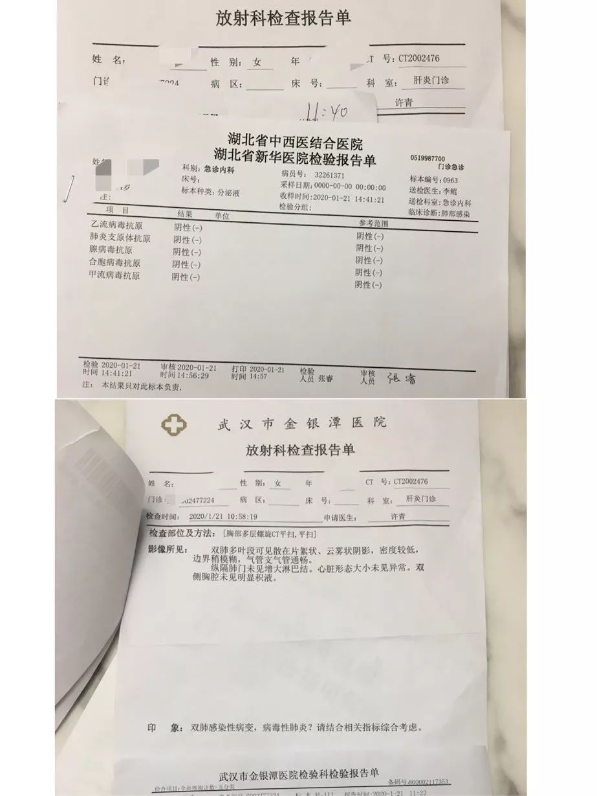
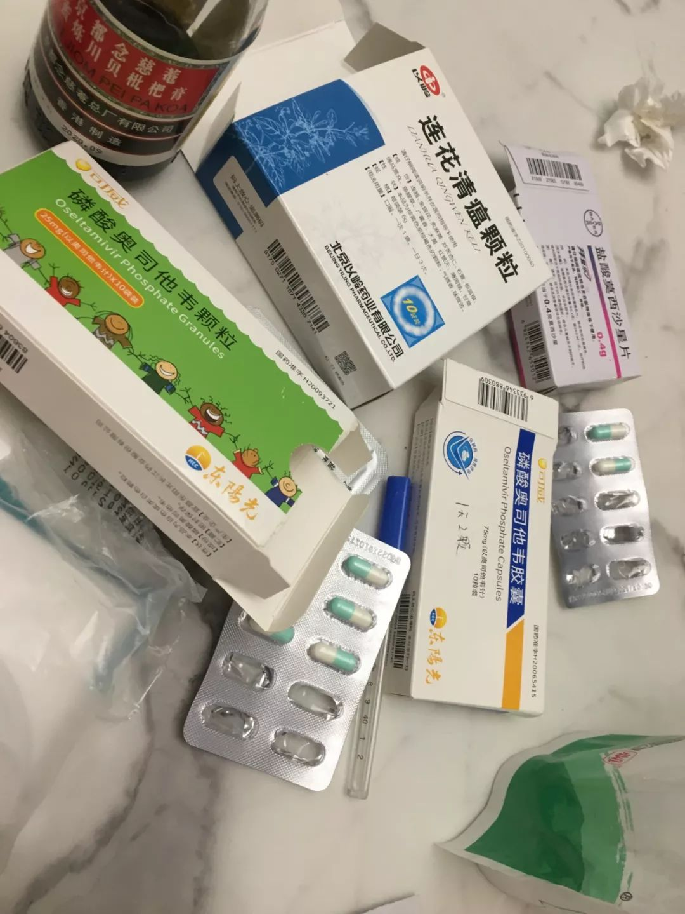
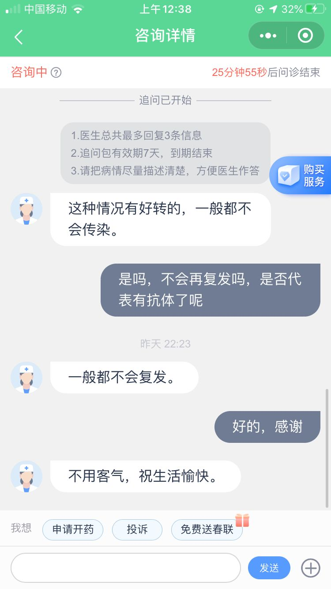
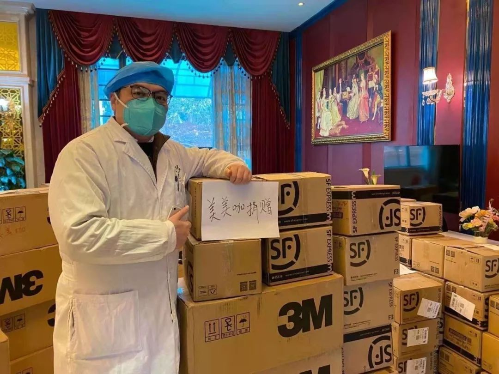
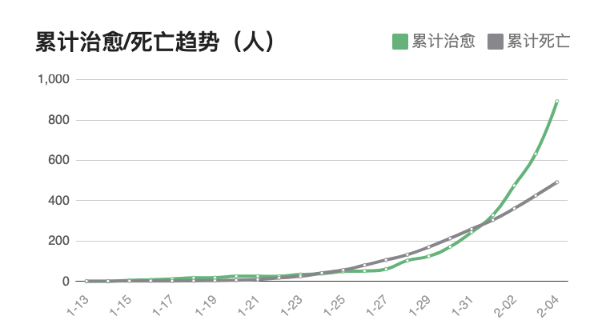
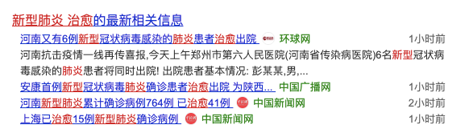

武汉兴建方舱医院、各大城市防控越发严格，以及 30 条疫情新闻
原文链接 备份链接 疫情发展 根据丁香医生实时数据，截至 2020 年 2 月 4 日 18 时，全国累计确诊病例 20520 例，疑似病例 23214 例。较昨日，新增确诊病例 3284 例，新增疑似病例 5027 例。其中， …

素素
武汉女孩素素，
是熬过这次新型肺炎的一个幸运儿。
她是一名普通白领，
今年1月14日发现症状，
1月19日确诊，随即在家隔离，
因很多报道说“这种病会突然恶化”，
她哭着写下了遗书。
1月30日，她的病症全部消退，
同期一起感染的妈妈，
和她互相打气，自己吃药、隔离，
最后也顺利治愈。
她把自己这次的战“疫”历程写成了文章，
一条获得独家授权在此全文发布。
她告诉我们，对于轻症患者来说，
病毒其实也没那么可怕，
就像感冒了一场一样，
真正可怕的是病毒来临的时候，
那些傲慢与偏见。
“愿大家历经浩劫，平安归来，一个不能少，
愿人们敬畏自然，一刻不松懈。”


素素家所在的小区，离华南海鲜市场一墙之隔
现在想来，我其实不能确定自己到底是哪一天感染上的。1月14日之前，我没有任何症状，连普通感冒的症状也没有。1月11日，我出发去上海玩了几天，1月14日是回程日，坐地铁去虹桥火车站时，突然觉得不舒服，几度站不住差点昏倒。现在回忆起来，庆幸那个时候没有人给我让座，也没有人扶我，庆幸我自己刚好带着口罩，应该没有对其他人造成影响。
唯一担心的，就是高铁回武汉的路上，坐在我旁边，带着三个孙儿从南通回荆州过年的一位老奶奶，我给了他们吃的零食，和一次性拖鞋，还简单聊了几句，不知道他们现在还是否安好。现在回想起来，真的很自责，也很牵挂那位老人，如果不是连自己了解这次疫情都实在太晚了，谁会愿意做个坏人？
其实当天在回武汉的路上，我母亲也跟我发消息，说自己在家里，身体有不适，发冷，头昏等，那个时候正值流感肆虐，我以为她也只是感冒了，安慰了几句，根本没有当回事。
14日当晚抵达武汉，在家休息了几天。15、16日两天状态特别差，浑身无力，无食欲，几乎没有嗅觉和味觉，好像只能识别甜味，睡觉出冷汗到全身汗湿，应该有伴随低烧，但是没太注意，不咳嗽，不流鼻涕。

新型肺炎已按法律规定列入“乙类传染病”（包括传染性非典型肺炎、艾滋病、病毒性肝炎），按甲类传染病（包括霍乱、鼠疫）进行预防和控制。
1月16日我刷微博，发现有人在说自己父亲得了新型肺炎没有医院收治的情况，开始有了一些警觉和关注。也有朋友关心，让我去医院做个检查。但我觉得自己平时身体好，很少感冒，虽然白天浑身无力，但睡一觉醒来，又觉得精神状态还不错，所以坚定认为自己只是小病，过两天就会好的。直到19日才抱着侥幸去做了基本检查。
去的时候下午三点，那时候医院人还不多，等到五点半，我是医生的最后几个患者之一。那个女医生简单问了几句，例如有没有发烧咳嗽等，我的回答都是症状不明显，只是想来做个检查看看而已，医生就说：那只用查个CT就可以判断出来了。等我去排队拍CT的时候才知道，跟我一样，对自己抱有怀疑的人还是特别多的，整个CT室的走廊都坐满了。
CT的结果要两个小时之后才能拿，我就先开车去汉阳接我爸。爸爸当天从老家坐汽车来武汉，带了一蛇皮袋子的年味腊货和特产，我当时身体已经开始无力、虚弱了，所以接到他以后，也没有下车帮他搬东西，也没说太多话，直接把他送回了家，晚饭也没来得及吃，就自己去医院拿结果了。
素素事后向朋友描述自己当时的情况
回到医院，我看到有的人拿到CT结果，兴高采烈地走了，有的人还在排队焦急等待。轮到我时将近晚上九点了，我看到片子上写着“右下肺部有感染性病变”，简直不敢相信自己的眼睛。为了确诊，我马上回门诊继续排队，问急诊的医生。
那个时候，医院晚上的急诊已经很多人了，开始排长队。医生看了我的片子，又问我，之前的医生怎么没有让你查血呢？我还有点懵，那个医生有点无奈，说，那你现在赶紧去查血吧，但愿你不要所有的结果都是阴性。我问：为什么呢？医生说，如果结果全部是阴性，就代表你这个是新型肺炎啊！
当时我还没有听明白是什么逻辑，等待一小时后，血液的结果也出来了，去问医生，结果那个医生下班换岗了，于是我又重新挂号，乖乖排队。终于等到我了，换了个医生之后，估计是经验不太足，也没有给我明确答复。我也不敢多问，但是那时候心里基本已经可以明确了。
1月19日真是漫长的一天。我回到家，发现爸爸妈妈已经睡着了，我赶紧让爸爸起床，单独到另一个房间去隔离。估计爸爸那个时候都是蒙的，第二天还照常说肚子饿要起床弄早饭，跟我们用一个卫生间。我觉得大家同住不妥，就命令他赶紧撤离回老家去，不要待在武汉了。
同时，我也非常担心妈妈的情况，她比我感冒更早。那几天她也没有表现出异常，甚至还在坚持上班和做家务。爸爸回家那天，她还做了晚饭。新闻上说，只有金银潭医院集中收治各医院的发热病人，我就赶紧带着妈妈去金银潭医院。
到了医院才知道，医院根本不会接待自己来的住院病人。当天我依旧浑身无力，让妈妈自己做CT和查血。果然不出所料，妈妈也基本确诊了，而且是双肺感染。

素素母亲的检验报告单
在等待结果的时候，我亲眼目睹了另一家人也带着自己患病的家人，寻求医院收留住院，因为整个武汉的医院都跑遍了，都不收，而且他们病情已经很严重了，可是，医院能做的，也只能安抚，劝离。
我拖着衰弱无力的身体，带着妈妈离开了这家医院，依旧回到了我们家附近的新华医院。我那时候是非常希望妈妈能住上院的，因为从CT结果来看她更严重，而且老人家，毕竟身体机能会差一些。
这个时候，医院已经明显比前一天更满了。很多人因为排队太久，开始出现负面情绪。我把我和母亲的结果都拿出来给医生看的时候，年轻医生经验不足，找来了主任，主任看了明确表示，就是感染了新型肺炎，因为没有核酸试剂，只能从CT和排查已知病毒来做诊断。他告诉我们，这个时候所有的医院都不可能有病床，最好的办法就是回家自行隔离，之后的输液也不用输了，因为这个病没有特效药，吃点开的药（抗甲乙流的奥司他韦和抗生素莫西沙星片）可以有一些辅助作用。
当时我明显能感觉诊室外人群的骚动和紧张，估计来自于医生对新型肺炎的确诊。那个时候，我竟然反而一点也不紧张了，因为那么多人都是想来确诊的，跟我们一样的可能至少一半吧……人的本能就是：如果大家都一样的话，事情好像就显得没那么可怕。

1月20日，素素陪妈妈打针，一直等到晚上六点
当天陪妈妈打最后一针，整个输液区也坐满了，看到朋友圈里的很多人都还是用开玩笑的心态在对待这个疫情，我就把自己的情况如实记录，发了一个朋友圈，让我的朋友们引起警觉。
没有想到这个朋友圈引起了如此大的骚动，一个小时内，满城的微信群都传开了，甚至传到了外省，我的手机信息瞬间都爆炸了。我当时因为身体和心理的双重压力，不想一一浏览和回复消息，就把这条朋友圈删除了。
可能大多数人那时都认为，疫情离自己还很遥远，他们也根本不知道现在医院的真实情况到了什么地步。我当天从医院回家后在楼下药店买药，主动提醒柜员小姐一定要戴口罩，旁边一位男士嘲笑我说搞得太过于紧张，直到我说我自己已经确诊了，他还以为我是在开玩笑。
从1月20日晚上开始，才是真正感受到了大家的重视和紧张。医院的问题开始凸显和受到重视，各个政策消息也随之而来，钟南山院士发言证实人传人，终于，大家都开始正视和应对这一切了。
随后，我经历了人生中最为惨淡的大年三十。再没有催婚，再没有亲人的团聚，再没有丰盛的年饭，再没有亲人的围绕和拜年祝福，只有满满的恐惧和不安，甚至是整夜的失眠。

素素说，这是她和妈妈“大年三十的盛宴”
一边哭，一边写好了留给妹妹的遗书，后悔自己还有很多都来不及去做的事，一整夜都在回忆自己短暂美好的前半生，生怕自己像有些报道里说的，双肺都突然白了，随时呼吸困难，随时有生命危险，随时会离开这个美丽的世界……

素素当时写的遗书
我哭的时候是偷偷哭的，因为妈妈的检查结果跟我比起来更严重，我不想影响到她。她年纪大一点，也没有加什么群，收不到与疫情相关的负面或者让人恐惧的信息，这种信息我也没有传达给她。整个隔离的过程中，她的心态都非常平和，基本上就是我让她检查，让她打针，回家隔离，消毒，等等，全部都是听从我的嘱咐和安排，从头到尾都没有任何沮丧。
在家隔离的日子，我每天都在关注疫情的进展和来自全国人民的幽默，一边也做着自我的心理疏导，时间过得挺快的。因为失去味觉和食欲，我吃不下任何东西，不知不觉瘦了五六斤，也是这几年来第一次成功恢复到了93斤的理想体重。
1月26日晚上开始，我明显感觉自己食欲有点恢复了。十多天以来，第一次主动想去找点吃的填肚子，夜里去厨房捞了点吃的，竟然异常开心和满足。恢复味觉的那一刻，仿佛自己如获新生。
我妈妈发病和恢复过程基本和我同步。归纳一下起病的症状：
1、无味觉和食欲，甚至想吐；
2、畏寒，伴随肌肉酸痛无力甚至哆嗦，睡觉冒冷汗；
3、头昏，无力，类似于感冒；
4、初期（前一周）肺里有痰，刚开始白色，中期（起病10天左右）绿色，带血丝，甚至布满血丝，后期（15天左右）血丝消失，痰也慢慢消失。
患这个新型肺炎，有的人是不会发烧的，比如我和妈妈全程几乎没有发烧过。重症病人基本都会发烧，但大多数人都是轻症，初期四五天身体病症感觉比较明显，后面病症其实就不太明显了。一旦食欲恢复，体力恢复，基本就可以宣布抗战胜利。
我爸爸因为隔离及时，回老家十多天以来，没有出现任何症状，免于感染。

素素和妈妈在家隔离时吃的药，莲花清瘟是自己买的，奥司他韦和莫西沙星是医生开的
这几天，我充当着网上咨询的角色，很多人自己或者家人朋友被感染了，都过来寻医问药，找寻经验，我一一做回复解答，我想告诉大家的是：
1、在没有核酸试剂确诊的情况下，CT片和传染已知病毒排查，基本99%就可以断定。因为核酸试剂很少，应用的硬件要求也很高，除了重症患者之外，几乎不可能用这种方式确诊。
我身边带着症状来问诊的人，没有一个有机会通过核酸试剂来确诊。我自己目前已经抗战病毒半个多月了，虽然在医院前台登记过病情，但也没有在这个上报的名单之列。
2、一去医院就能得到你想要的诊治在现阶段其实应该是很难实现的，医生们接诊的压力也是非常巨大的。不如做好自我抗战的心理准备，况且，医院各种排队，对于带病疑似的你，身体更难受，不如在家里休养。
3、这个病大部分轻症患者怎么治？一句话，就靠自己的抵抗力。没有对症的药，最好的药，就是自己的心态。
想想这十多天来，心态好的时候，都不觉得自己在治病，该吃饭就吃饭，该喝药喝药，刷刷手机，挺轻松，也利于身体机能恢复。可是当你一直盯着负面消息，紧张得不行，仿佛自己随时面临生命的尽头，吃不下，也睡不好，到处查症状，传播那些制造恐怖气氛的不良信息。现在想想，过于紧张和消极，才是抵抗病情最大的阻碍。
4、一定要做好预防，不要以为病毒离自己很远，最好养成日常消毒的习惯。现在我家里角角落落每天都紫外线车消毒一次，84喷洒，酒精擦拭，碗筷每天开水烫。出门时也随身携带酒精，喷洒触摸到的物品。
经过了这16天的抗战，已经胜利在望，很多人问我感受，其实我想跟大家说的是不要怕，这个病其实并没有想象中那么可怕。传染速度确实快，但是对生命的威胁程度并没有那么大，最可怕的其实是自己面对未知病毒的恐慌和想象，而不是病毒本身。
虽然在抗战的结尾，我们也有太多疑问，比如：康复后会不会有抗体？短期或者长期会不会再次被感染或者再复发？什么时候才会有预防药物？什么时候这场战役宣告结束？……我们作为这次疫情先头部队太想知道，这也是我们所有人即将要面对的问题。

素素愈后进行了网络咨询
这些天来，我感受到了整个世界的浓浓爱意。有的朋友发来大额的拜年红包，有的同事不知道从哪里听闻我断药了，药店都关门了满城买不到药，还各显神通帮我弄到了药品，还有的朋友冒着风险送来口罩物资……
看着网上对湖北地域的各种谩骂，我真的觉得挺好笑。这次疫情，武汉人做了很大的牺牲，也背了很大的黑锅。水深火热的武汉人真的没有精力和时间回怼你们，但不代表较真起来我们会输。
同时，我也注意到朋友圈有其他朋友治愈的好消息，那个朋友的妈妈比我和妈妈症状严重，在医院辗转20多天终于得救。

素素朋友的母亲的抗“疫”经历，她的症状比素素母女都严重很多
当你经历一次与死神擦肩而过之后，真的，那一刻起，会对所有的事都释然，能健康的活着，比什么都重要。如果不经历失去，谁会知道重逢有多么美好？
隔离在家的这么多天，我才发现，天天躺着并没有那么让人梦寐以求。只有对社会有贡献，能发挥自己的能量，才是生命最大的意义。
我以前没有意识到，快递、环卫工人、小区卫生人员，超市收银员、出租车司机等等这些基层的服务工作者这么被需要，甚至可以说，一天都离不开他们。
我甚至也没有意识到，那些一线的医务工作者，他们对于生命的守护的意义。在与死神搏斗的真正关头，他们冲在我们的前面。还有那些愿意贡献自己力量的志愿者们，你们是人群中最耀眼的光！

素素和同事们自发组织捐赠医用物资
这个时候，才真正理解那句：人人为我，我为人人！希望我们一起共同努力，让社会早日恢复常态，毕竟没有几个人不是背负诸如房贷车贷父母孩子等沉重的生活压力的。
武汉只不过不小心成为了大自然给人类警告的一页教科书。这并不是武汉一个城市的错，我们每一个人都有义务和责任，去铭记和承担这个教训。


致死率是本次疫情中人们最关心的问题之一，最近网上也陆续出现一些治愈病患的口述经历。
2月4日，国家卫健委举行新闻发布会，公布了此次新型肺炎截至目前的死亡率数据：全国确诊病例病死率2.1%，湖北省确诊病例病死率3.1%，武汉市确诊病例病死率4.9%。
武汉市的病死率为什么比其他地方高？新闻发布会上，专家分析，一个主要原因是病情爆发集中，床位资源不够。

2月4日，火神山医院交付，新增1000张床位，雷神山医院也即将交付，新增1500张床位，与此同时，武汉开始抢建方舱医院，总共13家方舱医院，预计能新增床位万余张。
全国各地也都在建设病区。1月31日，长沙市公共卫生救治中心改造完成，新增300个床位应对疫情。2月1日，北京小汤山医院启动修缮改造工程。2月5日0点，贵州省职工医院改建完成，作为新型肺炎确诊和定点救治医院交付使用。2月6日，郑州市第一人民医院的传染病区建成交付。2月3日，西安市公共卫生中心开工，首期建设的应急隔离病房将提供500张床位，预计在2月中旬投入使用……

数据来源：国家卫健委官网
已经确诊收治入院的患者的治愈情况，从统计数据看，1月31日是一个拐点。这一天，确诊患者的治愈人数超过了死亡人数。
截至2月5日上午11点，治愈人数892例，比前日新增260例，死亡人数492例，比前日新增67例。
国内各地和海外也一直在陆续传出患者治愈的消息。2月4日，美国首例确诊新型肺炎的患者治愈出院，使用了抗埃博拉的药物瑞德西韦。
这款药物还处于临床研发阶段， 目前已引进国内，紧急展开三期临床试验。

2月1日，DT财经分析所有的公开报道发现：治愈出院的病例整体上要比感染人群年轻，治愈者接受治疗的天数比死亡者略长，死亡者大多没有熬过一个治疗周期，因此要打赢新型冠状病毒，“很重要的是撑过接受治疗的第一周”。
这和国家卫健委2月4日公布的数据一致：出院患者的平均住院日是9天多一点，湖北省的平均住院日是20天。专家分析，“第一是跟重症患者比较多有关，第二跟武汉市制定的更为严格的出院标准有关。”

上海援鄂医疗队的医疗组组长、上海第一人民医院呼吸科教授周新工作在抗“疫”一线武汉金银潭医院，他2月1日接受专访时说，“这次新型肺炎，80%是轻症，用药后一到两周就可以恢复”，“老年人和基础性疾病的，一般容易加重”。


武汉医院里给病人加油的医务工作者们
随着支援武汉的医护人员和床位等医疗资源的迅速补充，以及科研人员的加紧研发、举全国之力的防控措施，后续疫情一定会得到缓解，但愿我们能听到越来越多像素素和她妈妈那样的好消息。
让我们一起继续等待，守望春暖花开！
文中素素为化名

疫情依然严峻，针对以下人群，
我们正在寻找采访对象！
#我在疫情一线#
不论是您是在湖北还是全国其他地区，只要您是奋战在一线的医护人员、后勤补给人员、记者、患者或患者家属，我们希望听到您的见闻和最迫切的需求。
#我的武汉现场#
如果您正身在武汉，如果您愿意讲述在“封城”后的实地体验见闻，我们希望把它传递给更多人。
请通过以下方式联系一条编辑，我们期盼您的消息！
一条编辑部邮箱editor@yit.com
或直接在文章下留言。
请您留下所在地、职业，大致讲述您的见闻与故事，如合适我们将尽快与您取得联系，进行采访！
如有图片也欢迎一并发来。
一条开免费直播课啦！
今天下午3:00，关注“一条”微博
瑜伽老师Angie教你【居家必备的瑜伽7式】，宅家也能增强免疫力！
▼


原文链接 备份链接 疫情发展 根据丁香医生实时数据，截至 2020 年 2 月 4 日 18 时，全国累计确诊病例 20520 例，疑似病例 23214 例。较昨日，新增确诊病例 3284 例，新增疑似病例 5027 例。其中， …
原文链接 备份链接 杨晨还在等通知。他在等待“十号令”带给他以及他的家庭命运的转机，他是一位“武汉病人”的家属。 让他有所期许的“十号令”，是2月2日发出的。按照“十号令”的要求，自通告发布之日起，对全市经发热门诊诊断有肺炎症状的发热病人 …
原文链接 备份链接 文/杜圆圆 编辑/单一 根据预测，新冠肺炎或将在一周后，迎来新的爆发期。从去年12月初被发现，到目前为止，疫情已经持续了两个月的时间。 从始至终，医护人员一直是最前线的逆行者。武汉这座刚崛起的新一线城市，成了全中国最惨 …
原文链接 备份链接 【财新网】（记者 黄蕙昭 综合）疫情局势仍然严峻。截至2日16时，中国累计确诊病例14489例，死亡304例，疑似病例19544例。湖北地区继续保持高增速：目前，湖北省确诊病例9074例，其中黄冈市累计确诊1002 …
原文链接 备份链接 有多少疑似？ 326份CT检查报告单，除了60份不发热的其他病例，剩下的266份CT报告，136例显示“肺部感染，呈多发磨玻璃样高密度影”。1月22日，湖北省新华医院放射科医生李云华手颤抖着数完，沉默了许久。这些前一 …